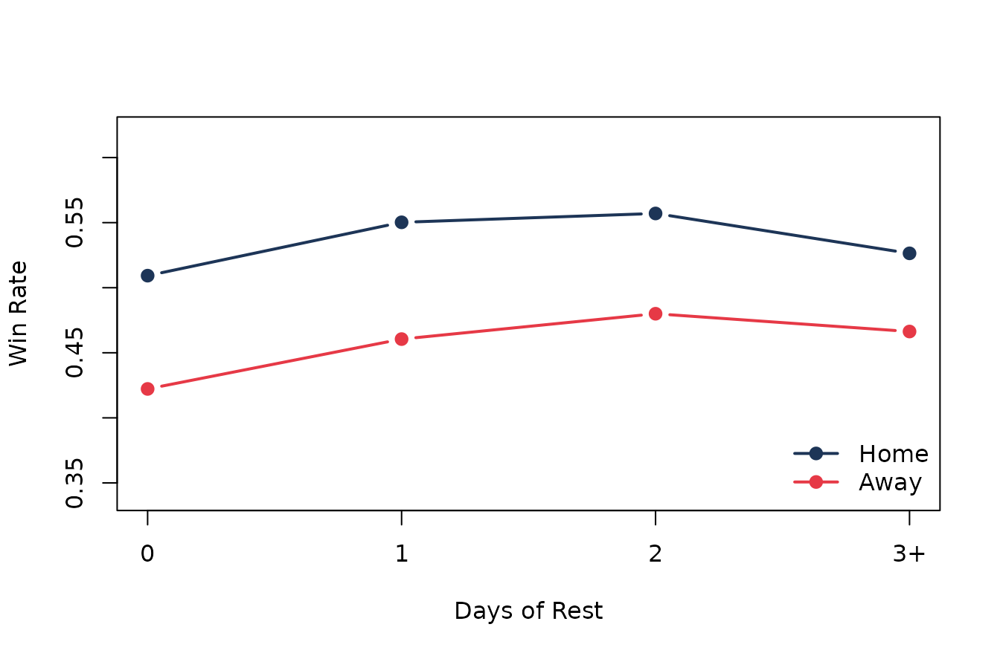
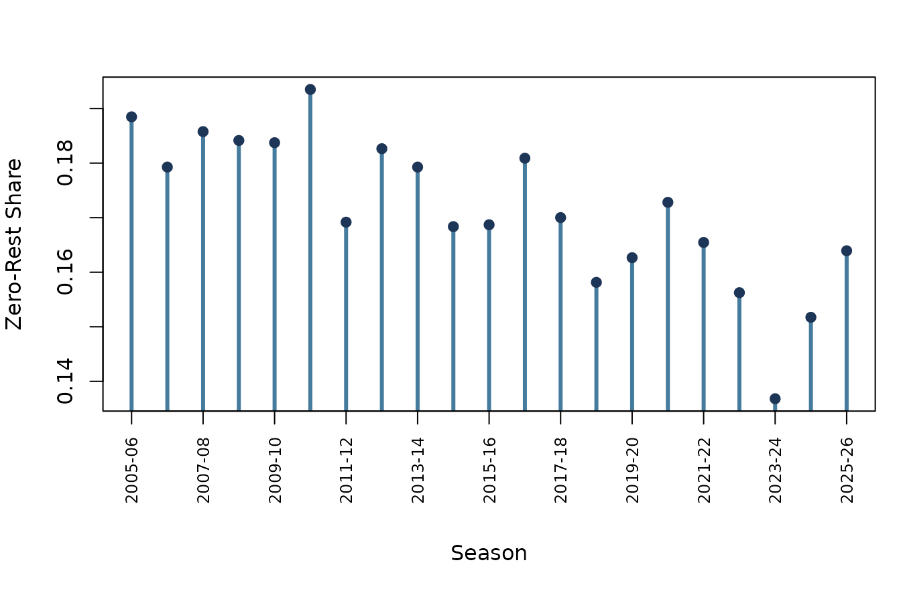

Question
The second night of a back-to-back is one of hockey’s favorite pregame excuses. It sounds reasonable: tired legs, shorter meetings, travel, less goalie certainty, no real practice day. But schedule complaints are easy to overstate.
This guided example asks a league-wide question:
In the salary-cap era, how much worse do teams perform when they play with zero days of rest?
We will use nhlscraper::games() to build one row per
team-game, calculate rest from each team’s previous game date, and
compare win rate and goal differential.
Build Team-Games
The source table has one row per game. Rest is a team-level property, so each game becomes two records: one for the home team and one for the away team.
# Pull game and team catalogs.
games_tbl <- nhlscraper::games()
teams_tbl <- nhlscraper::teams()
# Keep completed salary-cap regular-season games.
games_tbl <- games_tbl[
games_tbl[['seasonId']] >= 20052006 &
games_tbl[['gameTypeId']] == 2 &
!is.na(games_tbl[['homeScore']]) &
!is.na(games_tbl[['visitingScore']]),
c(
'gameId',
'seasonId',
'gameDate',
'homeTeamId',
'visitingTeamId',
'homeScore',
'visitingScore'
)
]
# Expand games into team-game rows.
home_games <- data.frame(
gameId = games_tbl[['gameId']],
seasonId = games_tbl[['seasonId']],
gameDate = as.Date(games_tbl[['gameDate']]),
teamId = games_tbl[['homeTeamId']],
isHome = TRUE,
goalsFor = games_tbl[['homeScore']],
goalsAgainst = games_tbl[['visitingScore']]
)
away_games <- data.frame(
gameId = games_tbl[['gameId']],
seasonId = games_tbl[['seasonId']],
gameDate = as.Date(games_tbl[['gameDate']]),
teamId = games_tbl[['visitingTeamId']],
isHome = FALSE,
goalsFor = games_tbl[['visitingScore']],
goalsAgainst = games_tbl[['homeScore']]
)
team_games <- rbind(home_games, away_games)
# Sort within team.
team_games <- team_games[order(
team_games[['teamId']],
team_games[['gameDate']],
team_games[['gameId']]
), ]
# Compute previous game date within team.
team_games[['previousGameDate']] <- as.Date(NA)
for (team_id in unique(team_games[['teamId']])) {
idx <- which(team_games[['teamId']] == team_id)
team_games[['previousGameDate']][idx] <- c(
as.Date(NA),
utils::head(team_games[['gameDate']][idx], -1)
)
}
# Create rest and result fields.
team_games[['restDays']] <-
as.integer(team_games[['gameDate']] - team_games[['previousGameDate']]) - 1L
team_games <- team_games[!is.na(team_games[['restDays']]), ]
team_games[['restBucket']] <- ifelse(
team_games[['restDays']] >= 3,
'3+',
as.character(team_games[['restDays']])
)
team_games[['restBucket']] <- factor(
team_games[['restBucket']],
levels = c('0', '1', '2', '3+')
)
team_games[['win']] <- team_games[['goalsFor']] > team_games[['goalsAgainst']]
team_games[['goalDiff']] <-
team_games[['goalsFor']] - team_games[['goalsAgainst']]
nrow(team_games)
#> [1] 50568The definition is literal: restDays = 0 means the team
played yesterday. That is the second night of a back-to-back.
League-Wide Rest Curve
First we compare all team-games by rest bucket.
# Summarize results by rest bucket.
rest_summary <- aggregate(
cbind(win, goalDiff) ~ restBucket,
data = team_games,
FUN = mean
)
rest_counts <- as.data.frame(table(team_games[['restBucket']]))
names(rest_counts) <- c('restBucket', 'games')
rest_summary <- merge(rest_summary, rest_counts, by = 'restBucket')
rest_summary <- rest_summary[
match(levels(team_games[['restBucket']]), rest_summary[['restBucket']]),
c('restBucket', 'games', 'win', 'goalDiff')
]
make_table(
rest_summary,
caption = 'Win rate and average goal differential by rest bucket.',
digits = 3
)| restBucket | games | win | goalDiff |
|---|---|---|---|
| 0 | 8648 | 0.450 | -0.274 |
| 1 | 27756 | 0.508 | 0.038 |
| 2 | 9441 | 0.521 | 0.119 |
| 3+ | 4723 | 0.501 | 0.042 |
The zero-rest penalty is visible in both columns. Teams on a back-to-back win less often and get outscored on average. The biggest improvement comes from moving from zero days of rest to one.
# Plot win rate and goal differential by rest bucket.
old_par <- graphics::par(no.readonly = TRUE)
graphics::par(mfrow = c(1, 2), mar = c(5, 4, 3, 1))
graphics::barplot(
rest_summary[['win']],
names.arg = rest_summary[['restBucket']],
col = c('#d62828', '#f77f00', '#fcbf49', '#90be6d'),
border = NA,
ylim = c(0, 0.6),
xlab = 'Days of Rest',
ylab = 'Win Rate'
)
graphics::abline(h = mean(team_games[['win']]), lty = 2, col = '#495057')
graphics::barplot(
rest_summary[['goalDiff']],
names.arg = rest_summary[['restBucket']],
col = c('#d62828', '#f77f00', '#fcbf49', '#90be6d'),
border = NA,
xlab = 'Days of Rest',
ylab = 'Average Goal Differential'
)
graphics::abline(h = 0, lty = 2, col = '#495057')
Team performance by days of rest.
graphics::par(old_par)Home Ice Does Not Erase Fatigue
Back-to-backs are not all equal. A tired team at home is still in a better spot than a tired team on the road.
# Summarize rest effect by venue.
venue_summary <- aggregate(
cbind(win, goalDiff) ~ restBucket + isHome,
data = team_games,
FUN = mean
)
venue_counts <- aggregate(
gameId ~ restBucket + isHome,
data = team_games,
FUN = length
)
names(venue_counts)[names(venue_counts) == 'gameId'] <- 'games'
venue_summary <- merge(
venue_summary,
venue_counts,
by = c('restBucket', 'isHome')
)
venue_summary[['venue']] <- ifelse(
venue_summary[['isHome']],
'Home',
'Away'
)
venue_summary <- venue_summary[, c(
'restBucket',
'venue',
'games',
'win',
'goalDiff'
)]
make_table(
venue_summary,
caption = 'Rest effect split by home and road games.',
digits = 3
)| restBucket | venue | games | win | goalDiff |
|---|---|---|---|---|
| 0 | Away | 5895 | 0.422 | -0.453 |
| 0 | Home | 2753 | 0.509 | 0.107 |
| 1 | Away | 12979 | 0.461 | -0.250 |
| 1 | Home | 14777 | 0.550 | 0.292 |
| 2 | Away | 4375 | 0.480 | -0.111 |
| 2 | Home | 5066 | 0.557 | 0.317 |
| 3+ | Away | 2035 | 0.466 | -0.173 |
| 3+ | Home | 2688 | 0.526 | 0.205 |
# Plot venue-specific rest curves.
home_rows <- venue_summary[venue_summary[['venue']] == 'Home', ]
away_rows <- venue_summary[venue_summary[['venue']] == 'Away', ]
graphics::plot(
seq_len(nrow(home_rows)),
home_rows[['win']],
type = 'b',
pch = 19,
lwd = 2,
col = '#1d3557',
xaxt = 'n',
ylim = c(0.34, 0.62),
xlab = 'Days of Rest',
ylab = 'Win Rate'
)
graphics::lines(
seq_len(nrow(away_rows)),
away_rows[['win']],
type = 'b',
pch = 19,
lwd = 2,
col = '#e63946'
)
graphics::axis(
side = 1,
at = seq_len(nrow(home_rows)),
labels = home_rows[['restBucket']]
)
graphics::legend(
'bottomright',
legend = c('Home', 'Away'),
col = c('#1d3557', '#e63946'),
pch = 19,
lwd = 2,
bty = 'n'
)
Home and road win rate by rest bucket.
The lines stay separated. Home ice helps, rest helps, and the worst combination is exactly the one coaches complain about most: no rest on the road.
Has the Schedule Become Kinder?
The league can reduce pain by reducing the share of team-games played on zero rest. We can track that share by season.
# Summarize zero-rest share by season.
season_rest <- aggregate(
I(restDays == 0) ~ seasonId,
data = team_games,
FUN = mean
)
names(season_rest)[names(season_rest) == 'I(restDays == 0)'] <- 'zeroRestShare'
season_rest <- season_rest[order(season_rest[['seasonId']]), ]
season_text <- as.character(season_rest[['seasonId']])
season_rest[['season']] <- paste0(
substr(season_text, 1, 4),
'-',
substr(season_text, 7, 8)
)
make_table(
utils::tail(season_rest[, c('season', 'zeroRestShare')], 8),
caption = 'Recent share of team-games played on zero rest.',
digits = 3
)| season | zeroRestShare | |
|---|---|---|
| 14 | 2018-19 | 0.158 |
| 15 | 2019-20 | 0.163 |
| 16 | 2020-21 | 0.173 |
| 17 | 2021-22 | 0.165 |
| 18 | 2022-23 | 0.156 |
| 19 | 2023-24 | 0.137 |
| 20 | 2024-25 | 0.152 |
| 21 | 2025-26 | 0.164 |
# Plot season trend in zero-rest games.
season_x <- seq_len(nrow(season_rest))
label_idx <- seq(1L, nrow(season_rest), by = 2L)
old_par <- graphics::par(no.readonly = TRUE)
graphics::par(mar = c(7, 4, 3, 1))
graphics::plot(
season_x,
season_rest[['zeroRestShare']],
type = 'h',
lwd = 3,
col = '#457b9d',
xaxt = 'n',
xlab = '',
ylab = 'Zero-Rest Share'
)
graphics::points(
season_x,
season_rest[['zeroRestShare']],
pch = 19,
col = '#1d3557'
)
graphics::axis(
side = 1,
at = season_x[label_idx],
labels = season_rest[['season']][label_idx],
las = 2,
cex.axis = 0.75
)
graphics::mtext('Season', side = 1, line = 5)
Share of team-games played on zero rest by season.
graphics::par(old_par)This turns the article from “back-to-backs are hard” into a second question: how often does the league ask teams to absorb that cost?
Team Leaderboard
Once the team-game table exists, a league-wide question can become a team identity question.
# Rank teams by zero-rest win rate.
zero_rest_tbl <- team_games[
team_games[['restDays']] == 0,
c('teamId', 'win', 'goalDiff')
]
zero_summary <- aggregate(
cbind(win, goalDiff) ~ teamId,
data = zero_rest_tbl,
FUN = mean
)
zero_counts <- aggregate(
win ~ teamId,
data = zero_rest_tbl,
FUN = length
)
names(zero_counts)[names(zero_counts) == 'win'] <- 'games'
zero_summary <- merge(zero_summary, zero_counts, by = 'teamId')
zero_summary <- zero_summary[zero_summary[['games']] >= 50, ]
zero_summary <- merge(
zero_summary,
teams_tbl[, c('teamId', 'teamTriCode')],
by = 'teamId',
all.x = TRUE
)
best_zero <- zero_summary[order(-zero_summary[['win']]), ]
best_zero <- utils::head(best_zero[, c(
'teamTriCode',
'games',
'win',
'goalDiff'
)], 8)
worst_zero <- zero_summary[order(zero_summary[['win']]), ]
worst_zero <- utils::head(worst_zero[, c(
'teamTriCode',
'games',
'win',
'goalDiff'
)], 8)
make_table(
best_zero,
caption = 'Best zero-rest win rates among teams with at least 50 games.',
digits = 3
)| teamTriCode | games | win | goalDiff | |
|---|---|---|---|---|
| 3 | NYR | 280 | 0.564 | 0.425 |
| 33 | VGK | 98 | 0.561 | 0.214 |
| 6 | BOS | 281 | 0.498 | 0.110 |
| 28 | SJS | 271 | 0.491 | -0.074 |
| 5 | PIT | 303 | 0.488 | -0.026 |
| 16 | CHI | 310 | 0.484 | -0.123 |
| 19 | STL | 295 | 0.481 | -0.064 |
| 12 | CAR | 321 | 0.480 | -0.146 |
make_table(
worst_zero,
caption = 'Lowest zero-rest win rates among teams with at least 50 games.',
digits = 3
)| teamTriCode | games | win | goalDiff | |
|---|---|---|---|---|
| 34 | SEA | 53 | 0.302 | -1.113 |
| 32 | ARI | 124 | 0.347 | -0.871 |
| 7 | BUF | 335 | 0.379 | -0.573 |
| 29 | CBJ | 329 | 0.389 | -0.584 |
| 11 | ATL | 95 | 0.389 | -0.779 |
| 22 | EDM | 232 | 0.401 | -0.534 |
| 4 | PHI | 310 | 0.416 | -0.574 |
| 10 | TOR | 303 | 0.419 | -0.416 |
This is where a broad endpoint becomes fan-readable. The same reshaped table can support league averages, venue splits, season trends, and team debates.
What We Learned
Back-to-backs are not just a broadcast excuse. In the salary-cap era,
zero-rest teams win less often and carry worse goal differential. The
penalty is sharpest on the road, and the league-wide cost is large
enough to be visible with only games() and a careful
reshape.
The broader lesson is methodological: nhlscraper
endpoints often start as simple catalogs, but the interesting questions
appear after you change the unit of analysis. Here, one row per game
became one row per team-game, and the schedule suddenly had a measurable
price.